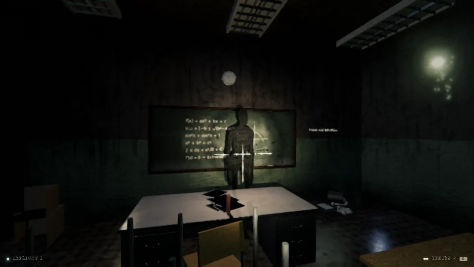
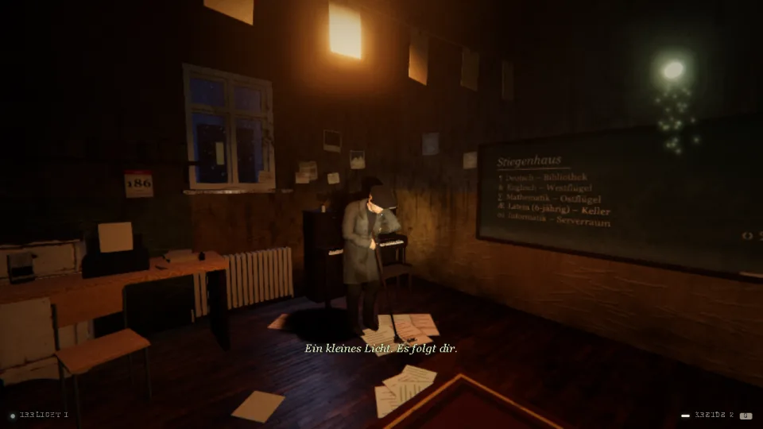
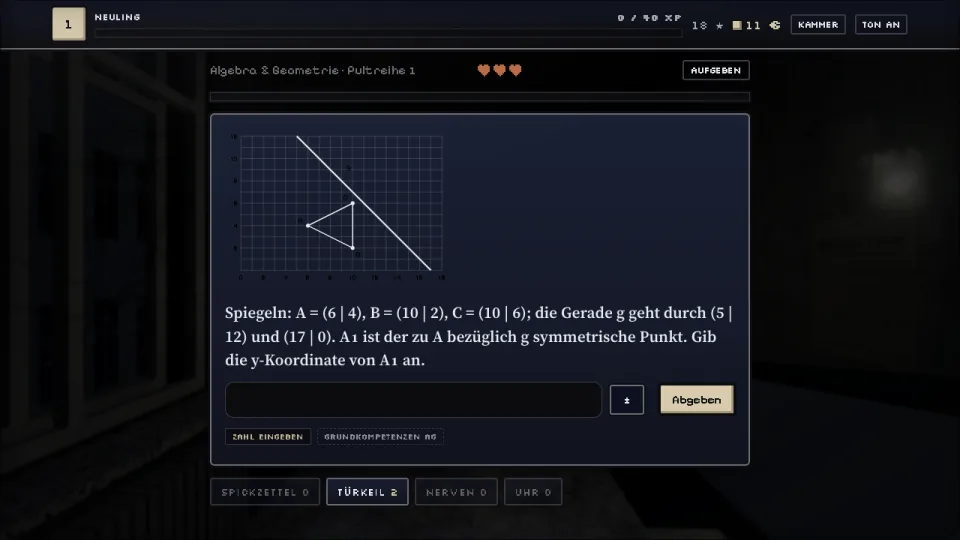
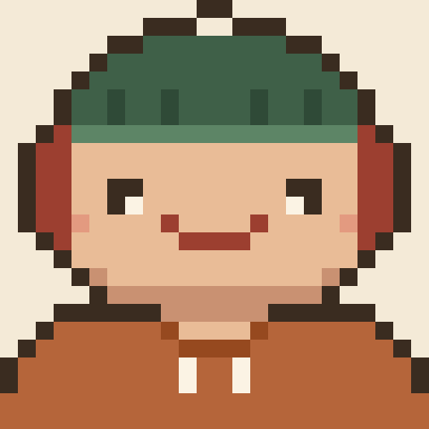

Agent-Board
A live pixel-art view for Claude Code agents. Every subagent is a small figure that walks into the room of the tool it is using. At a glance you see who is working and who is waiting for approval.
AI agent · public, release v1.4.0

I build AI agents and I’m learning cybersecurity.
Agent-Board shows live which of my Claude Code agents is working and which one is waiting for my approval. Open source, built by me.
17 · high school student in Vienna · graduating 2027, then computer science
Every coloured line is a project. Tap one.
Yellow is AI agents, cyan is security. Red is learning games.
3,619 tests. Automated tests for Jarvis, every night in the cloud.
A live pixel-art view for Claude Code agents. Every subagent is a small figure that walks into the room of the tool it is using. At a glance you see who is working and who is waiting for approval.
AI agent · public, release v1.4.0
My voice assistant for Mac and Windows: press a key or say “Hey Jarvis”, it gets things done with its tools and answers by voice. Data encrypted, key in the macOS keychain, a test run in the cloud every night.
AI agent · private, used every day No public code, because personal data is involved.I checked my iPhone against 6,630 public spyware indicators with Amnesty International’s Mobile Verification Toolkit: none found, but that is not proof. Plus 6 rooms of the Pre Security path on TryHackMe and Cisco’s Introduction to Cybersecurity course.
Security · in progress I don’t have a certificate yet.A pixel-style learning game with a world map, bosses, a shop and a mock exam. Built once, turned into two games: the GWB Rally (geography and economics) with 273 questions and the Cyber Rally with 135 questions and Leitner-style spaced repetition.
Learning game · 408 questions in two games · not public yet
A guard checks every commit and push against 10 patterns before it happens, plus a cockpit for open pull requests and skills for recurring workflows.
AI agent · 2 mods, 2 skills The guard is open source, the cockpit and skills are private.My 3D learning game for my own final exams (Matura): maths, English, German and Latin, every question from real past papers with its source. You walk through a school at night in 3D. Knowledge is light, forgetting is darkness, and an “examiner” with a blank sheet for a face hunts you. Questions come back in growing intervals so they stick.
Learning game · 3D in the browser with three.js · private, just for me Not publicly playable, because I built it for my own exam prep.


I write down what gets built and split it into phases.
Claude Code agents build separate parts in parallel, cloud routines keep working at night. I review and merge.
Every change runs through the tests before it stays.
No keys in the code, no private data. Before publishing I check which attack paths exist.
Only finished things go public: with docs, a license and a demo.

Questions about my projects, feedback or working together: GitHub is the fastest way.
Issues and feedback on Agent-Board are welcome on GitHub.